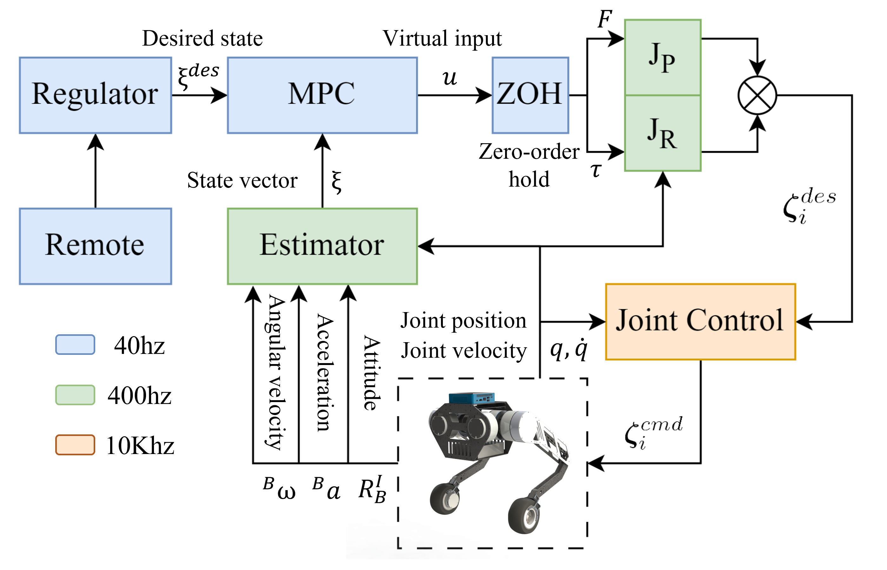
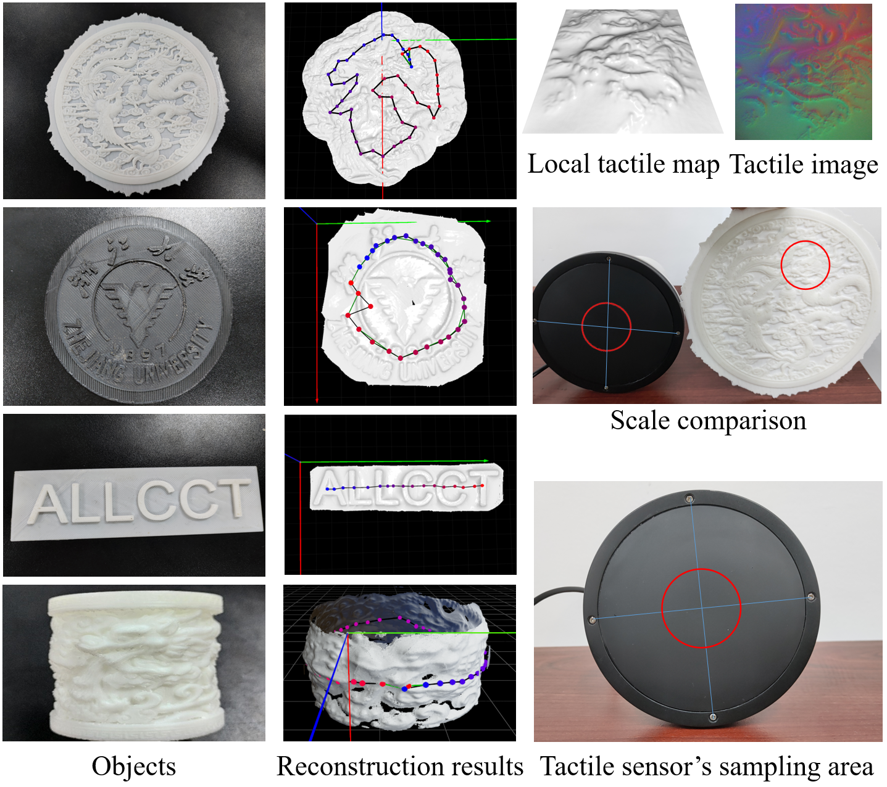

|  |
Jianqiao Yu, Zhangzhen Zhu, Junyuan Lu, Sicheng Yin, Yu Zhang IEEE Robotics and Automation Letters, 2023. Paper / Video |
|  |
Junyuan Lu, Zeyu Wan, Yu Zhang IEEE Robotics and Automation Letters, 2023. Paper / Arxiv / Code / Video |